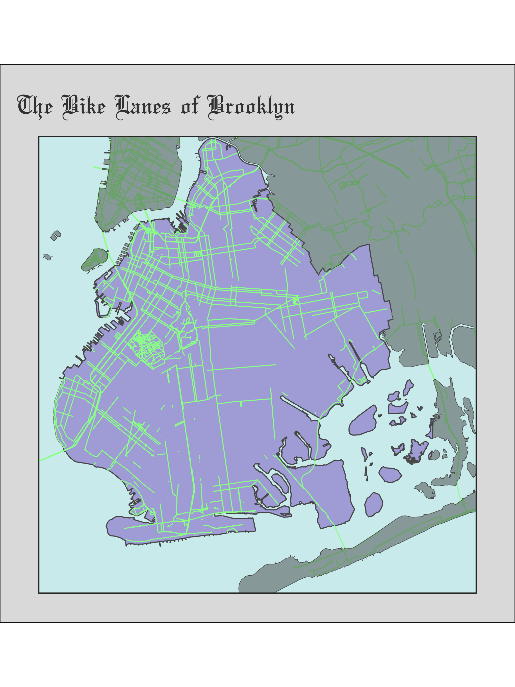

I was inspired by this bit of code to make a map of Brooklyn bike lanes--the lanes upon which I once biked many a mile.
library(osmdata)
library(dodgr)
library(tidyverse)
library(sf)Importing and cleaning the street data
# Boundary box that covers Brooklyn with bits of Manhattan and Queens
bbox <- st_bbox(c(xmin = -74.05,
xmax = -73.81,
ymax = 40.74,
ymin = 40.55),
crs = st_crs(4326)) %>%
st_as_sfc()
# Use this boundary box to remove NJ
bbnj <- st_bbox(c(xmin = -74.05,
xmax = -74.02,
ymax = 40.74,
ymin = 40.69),
crs = st_crs(4326)) %>%
st_as_sfc()
# Get shapefiles for the 5 boroughs boundaries
url <- "https://www1.nyc.gov/assets/planning/download/zip/data-maps/open-data/nybb_19d.zip"
fil <- basename(url)
if (!file.exists(fil)) download.file(url, fil)
nyc <- unzip(fil)
nyc <- st_read(nyc[1]) %>%
st_transform(4326) %>%
st_intersection(bbox)## Reading layer `nybb' from data source `/Users/rap168/Documents/GitHub/ramorel.github.io/files/nybb_19d/nybb.shp' using driver `ESRI Shapefile'
## Simple feature collection with 5 features and 4 fields
## geometry type: MULTIPOLYGON
## dimension: XY
## bbox: xmin: 913175.1 ymin: 120121.9 xmax: 1067383 ymax: 272844.3
## epsg (SRID): 2263
## proj4string: +proj=lcc +lat_1=41.03333333333333 +lat_2=40.66666666666666 +lat_0=40.16666666666666 +lon_0=-74 +x_0=300000.0000000001 +y_0=0 +ellps=GRS80 +towgs84=0,0,0,0,0,0,0 +units=us-ft +no_defsbklyn <- nyc[2, ]
queens <- nyc[3, ]
mnhtn <- nyc[4, ]
# Thanks to tidycensus's creator Kyle Walker for [this handy function](https://walkerke.github.io/tidycensus/articles/spatial-data.html)
# Need it to remove bike lanes that cross the Hudson to NJ
st_erase <- function(x, y) {
st_difference(x, st_union(y))
}
brooklyn_box <- getbb("Brooklyn, New York")
bklyn_streets <- dodgr_streetnet(brooklyn_box, expand = 1)
bike_lanes <-
bklyn_streets %>%
as_tibble() %>%
select(osm_id, name, contains("bicycle"), contains("cycleway")) %>%
pivot_longer(cols = c(-osm_id, -name), names_to = "variables") %>%
mutate(value = ifelse(is.na(value), "no", "yes")) %>%
group_by(osm_id, name) %>%
mutate(bike_lane = ifelse(any(value == "yes"), "yes", "no")) %>%
select(-variables, -value) %>%
distinct() %>%
ungroup()
bike_lanes <-
left_join(bike_lanes, bklyn_streets) %>%
st_as_sf() %>%
st_intersection(bbox) %>%
st_erase(bbnj) %>%
select(osm_id, name, bike_lane)Creating the map
ggplot() +
geom_sf(data = bbox, fill = "lightcyan2", color = "grey20", size = 0.5) +
geom_sf(data = bklyn, fill = "mediumpurple3", alpha = 0.5, size = 0.43) +
geom_sf(data = filter(bike_lanes, bike_lane == "yes"), size = 0.4, color = "palegreen", show.legend = FALSE) +
geom_sf(data = queens, fill = "grey35", alpha = 0.5, size = 0.2) +
geom_sf(data = mnhtn, fill = "grey35", alpha = 0.5, size = 0.2) +
geom_sf(data = bbox, fill = "transparent", color = "grey20", size = 0.5) +
labs(title = "The Bike Lanes of Brooklyn") +
theme_void() +
theme(
plot.title = element_text(size = 24, color = "grey25", face = "bold", family = "Olde English", vjust = 0),
plot.background = element_rect(fill = "gray88", color = "black"),
panel.background = element_rect(fill = "gray88", color = NA),
panel.grid = element_blank(),
panel.border = element_blank(),
axis.text = element_blank(),
axis.ticks = element_blank(),
plot.margin = unit(c(.5, .5, .2, .5), "cm"),
panel.spacing = unit(c(-.1, 0.2, .2, 0.2), "cm"))